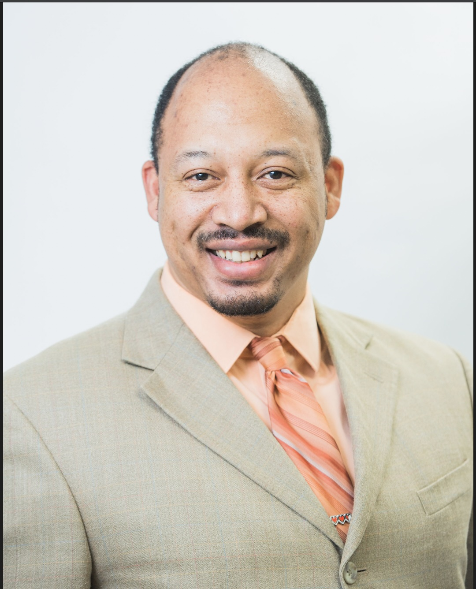

Resumé/CV

Overview
I want to bring the totality of my experience, training, and education as a linguist, software engineer, data scientist, and
mathematician to bear on meaningful and complex problems.
Ethics and integrity are of the utmost importance to me -- if your business places profitability over morality,
I'm not interested.
The sense of pride I need to have in my work is not solely contingent upon technical outcomes.
The overarching goals of any prospective endeavor I consider must be directed at contributing to a better world for ALL of
us.
Qualifications
- 2+ years software engineering experience (Javascript, Java, Python, Django, R, SQL, MATLAB)
- Training in Natural Language Processing (NLP), Data Science/Engineering, and Machine Learning (ML)
- 19+ years of language translation & transcription, and intelligence analysis experience
- Broad experience in research and investigation
Work Experience
(USAA, Dec 2022-present)
Software Engineer III
- Full-stack web developer; modernizes and maintains auto claims applications
- Ensures compliance with legal and accessibility requirements
(Career break, Aug 2017-Dec 2022)
Student
- Earned A.S. in Mathematics at Northwest Vista College, 2021
- Graduate, Codeup Data Science bootcamp, 2022
- Currently enrolled at UTSA to complete Bachelor's in Mathematics (ongoing)
(Applied Integrated Technologies Inc., Mar 2007-Aug 2017)
Contract Portuguese/Spanish Language Analyst
- Senior Language Analyst
- Subject Matter Expert (SME); briefings, consultation on product reporting and daily operations
- First-line intelligence analysis, traffic analysis, and target development
(United States Air Force, Sep 1997-Mar 2007)
Cryptologic Linguist, operational supervisor, trainer
- Supervised military, government civilian, and contractor personnel at various organizational levels
- Managed complex collection and targeting databases; directed mission's focus
- Directed daily mission operations and drafted mission objectives; shaped team's contributions
Education and Training
- Currently enrolled at UTSA, Mathematics major
- Graduate, Data Science bootcamp, Codeup
- A.S. Mathematics, 2021, Northwest Vista College
- Portuguese Transcription course, 2005
- Defense Language Institute Foreign Language Center (DLIFLC) Advanced Spanish course, 2004
- Airman Leadership School, 2002
- National Cryptologic School (NCS) Advanced Spanish Transcription & Analysis course, 2001
- Autonomous National University of Mexico (UNAM) Spanish course, 2000
- NCS Intermediate Spanish Transcription & Analysis course, 1999
- Air Force Cryptologic Linguist course, 1998
- DLIFLC Basic Spanish course, 1998
- Basic Military Training, Lackland AFB, 1997
Awards
- Joint Service Commendation Medal (Meritorious Service, 2003-2007)
- Air Force Commendation Medal (Meritorious Service, 1999-2003)
- Joint Service Achievement Medals (Outstanding Achievement; 2000, 2002, 2006)
References available upon request.